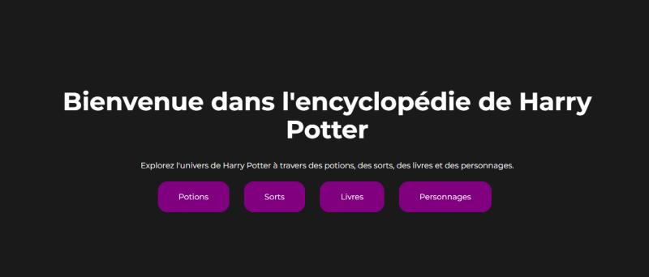
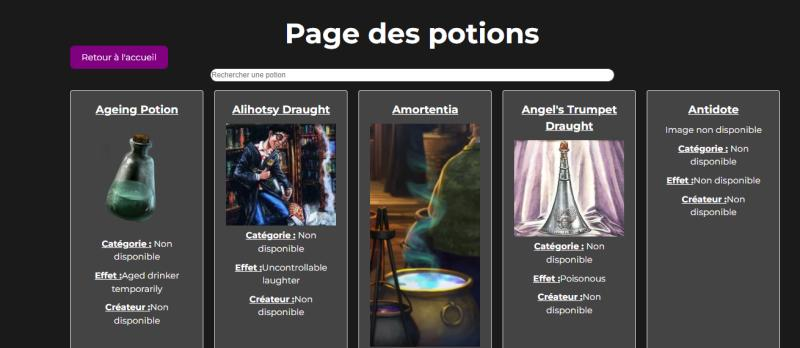

Encyclopédie intéractive de l'univers d'Harry Potter

Le contexte du projet
Le projet a été proposé comme exercice noté pour évaluer nos compétences en développement
d'applications web avec Vue.js. Il s'inscrit dans une logique d'apprentissage
de technologies modernes pour la création d'interfaces dynamiques et interactives.
L'ambition du projet
L'objectif principal était de créer une encyclopédie interactive permettant aux utilisateurs
d'explorer facilement l'univers de Harry Potter. Cela implique :
- Une navigation fluide et rapide entre les sections.
- Une présentation attrayante et responsive.
- L'intégration complète des données de PotterDB pour offrir une expérience utilisateur immersive.
Le projet devait également démontrer notre capacité à gérer des projets techniques complexes en équipe et
à respecter des contraintes strictes. 
Technologies utilisées
Pour développer cette application web j'ai utilisé les langages suivants :
- HTML
- CSS
- JavaScript
J'ai également utilisé les technologies suivantes :
- Frontend Framework : Vue.js
- Gestion des Routes : Vue Router
- Appels API : Axios
- Styles : CSS, Flexbox, CSS Grid
- Hébergement : Lien hébergé ici
Compétences Développées
Techniques :
- Intégration d'API RESTful.
- Conception et structuration d'une application Vue.js.
- Implémentation de fonctionnalités avancées comme la pagination et la recherche.
Transversales :
- Collaboration efficace en binôme.
- Gestion de projet avec répartition des tâches.
- Respect des délais et des consignes techniques.
Humaines :
- Communication claire et régulière avec le coéquipier.
- Résolution de problèmes ensemble pour surmonter les défis techniques.
Conclusion : Retour d’Expérience et Apprentissage
Ce projet a été une excellente opportunité de mettre en pratique nos compétences théoriques dans un cadre réaliste. Nous avons particulièrement apprécié le défi d'intégrer une API complexe et de concevoir une application qui réponde aux attentes des utilisateurs. En revanche, nous avons rencontré des difficultés liées à la gestion de la pagination et à la recherche simultanée, ce qui nous a poussés à explorer des solutions alternatives et à affiner notre compréhension des concepts fondamentaux de Vue.js.
Le rendu final, bien que perfectible sur certains aspects de design, est pleinement fonctionnel et reflète une bonne maîtrise des technologies étudiées. Nous sommes confiants que ce projet marque une étape importante dans notre progression.